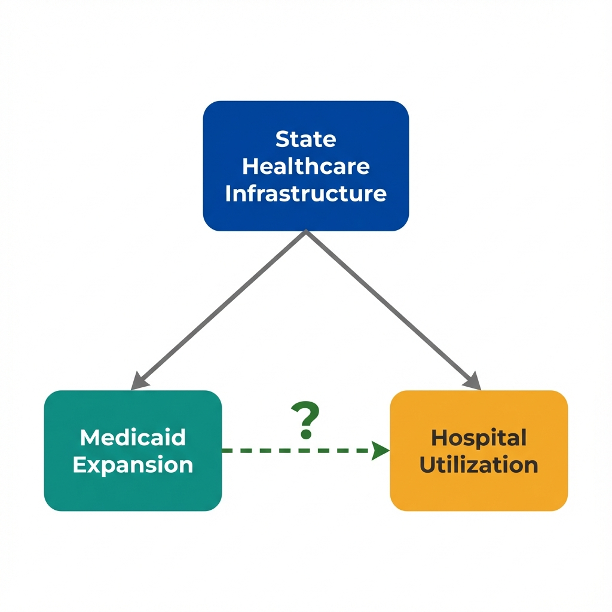
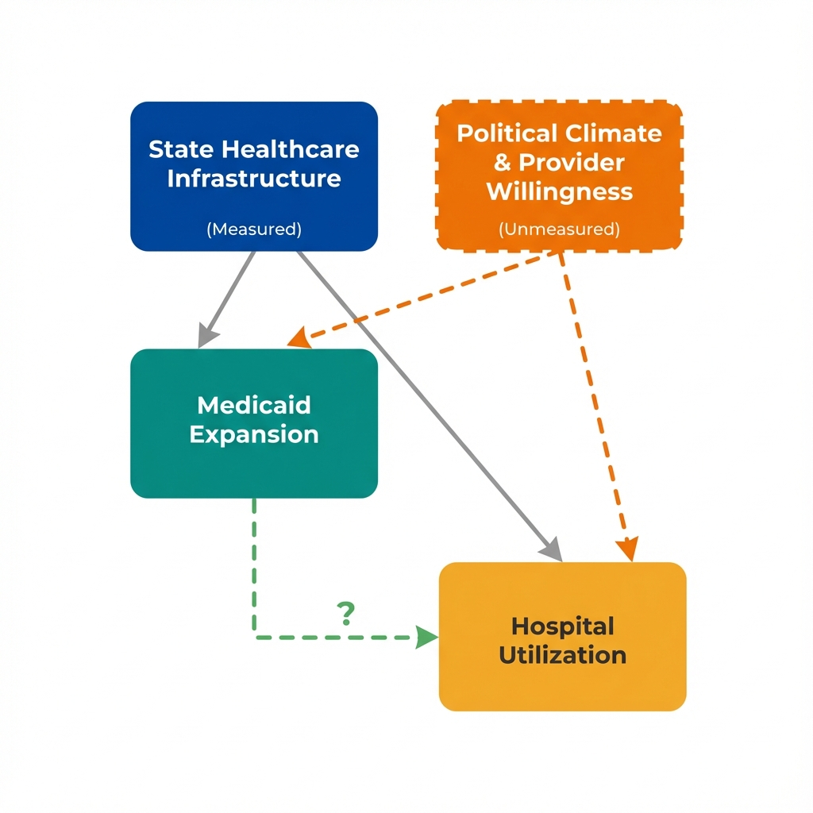

The Data
Each dot represents a U.S. state. States that expanded Medicaid tend to have higher hospital utilization rates. Is this evidence that Medicaid expansion increases hospital use? (Data are simulated for illustration.)
Hospital Utilization by State Healthcare Index
Next: Does this correlation mean Medicaid expansion causes higher hospital use? Or could something else explain both the expansion decision and the utilization rates?
The Problem
States with stronger healthcare systems were more likely to expand Medicaid. Those same systems also facilitate higher healthcare utilization regardless of insurance coverage.

Arrows show potential causal relationships. The dashed arrow represents the effect we want to measure.
What Is Policy Endogeneity?
Policy endogeneity occurs when the same factors that influence a policy decision also influence the outcomes we want to measure. In this case:
- States with robust healthcare systems are more likely to expand Medicaid
- Those same states already have higher healthcare utilization due to better access
- The policy "choice" is not random; it reflects underlying state characteristics
This creates a fundamental problem: we cannot simply compare expansion states to non-expansion states because they differ in ways beyond just the policy.
Next: If healthcare infrastructure confounds this relationship, what happens when we compare states with similar infrastructure levels?
Seeing the Confounder
If healthcare infrastructure drives both Medicaid expansion and hospital use, then comparing states within the same infrastructure level should show a smaller expansion effect. Use the filters below to stratify the data.
What Is State-Level Selection?
State-level selection describes how states "select into" policies based on their characteristics. States that expand Medicaid are not a random subset of all states. They differ systematically in:
- Political orientation and governance priorities
- Existing healthcare infrastructure and capacity
- Historical patterns of public health investment
- Population health needs and demographics
When we control for healthcare infrastructure, the apparent effect shrinks. This reveals how much of the original association was driven by selection rather than the policy effect.
Next: Controlling for infrastructure helped, but what about factors we cannot observe or measure? Political climate, provider attitudes, and health culture may also drive both expansion and utilization.
What We Can't Measure
Stratification helped with what we measured. Some factors that influence both Medicaid expansion and hospital utilization do not appear in any dataset.

Political Climate and Provider Willingness
States with supportive political climates may both embrace Medicaid expansion more readily AND have healthcare systems more willing to serve newly insured patients.
Provider willingness to accept Medicaid patients, community health norms, and public health investment are difficult to capture in datasets. Yet they could drive both the "treatment" (expansion) and the "outcome" (utilization).
This is the problem of unmeasured confounding. Regardless of how carefully we adjust for what we can see, hidden factors may remain unaccounted for.
What Is Unmeasured Confounding?
Unmeasured confounding occurs when variables we cannot observe or quantify affect both the treatment and the outcome. Unlike measured confounders (which we can control for through stratification or regression), unmeasured confounders remain hidden sources of bias.
- No amount of statistical sophistication can eliminate bias from variables we do not measure
- Sensitivity analysis can assess how strong an unmeasured confounder would need to be to explain away our findings
- Better study designs (natural experiments, instrumental variables) can sometimes bypass this problem
Next: What questions should we ask when evaluating claims about Medicaid expansion's effects? How do economists approach this identification challenge?
Questions to Consider
These questions help identify confounding threats that statistical adjustment cannot fix. They will not prove causation, but they reveal where the analysis is most vulnerable to bias.
What else differs between expansion and non-expansion states?
States that expanded Medicaid might differ from other states in many ways beyond just having expansion.
Is this a fair comparison?
Cross-sectional data shows us a snapshot, not a story. We compare different states at one point in time.
Which came first?
In this data, we see utilization and expansion status at the same time. We do not know the full sequence.
What study design would help?
This observational data has limitations. A different approach might give stronger evidence.
Concepts Demonstrated in This Lab
Key Takeaway
No amount of statistical adjustment can fix a flawed comparison. When unmeasured factors drive both policy adoption and outcomes, the solution is not better adjustment. It requires finding sources of policy variation that operate independently of unmeasured confounders. Timing of policy rollouts, eligibility thresholds, and geographic discontinuities can provide this. This is what economists mean by "identification."